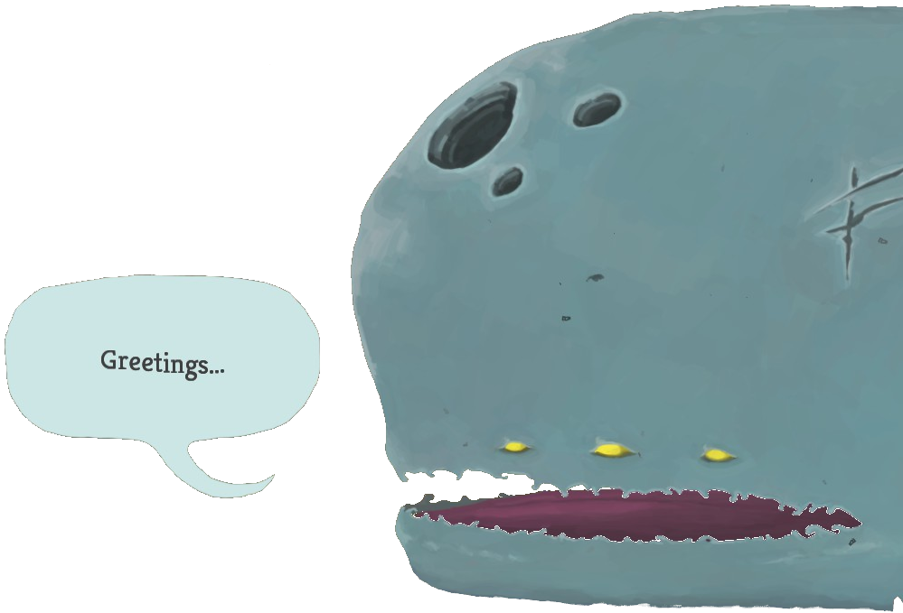

Slay the spire is a Deck building Rouguelike game.
Every run is randomly generated so you never play
the same thing twice. You can choose from the 4
base heroes to start your adventure. The game has 3 floors
(4 if you get all the keys) and at the end of every floor
a boss awaits. Upon completing the three floors you will
unlock ascension mode and make the 4th floor available.
In ascension mode runs get harder and harder the higher
the ascension level (max 20).
(Scroll Right -->)


| Names | IronClad | Silent | Defect | Watcher |
| Starting HP | 80HP | 70HP | 75HP | 72HP |
| Starting Relic | Burning Blood | Ring of the Snake | Cracked Core | Pure Water |